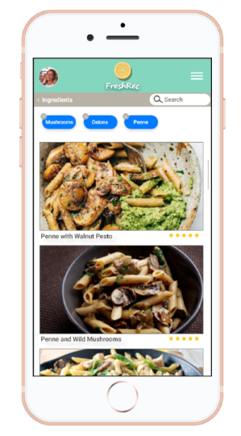
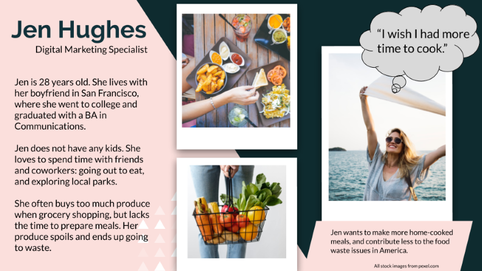
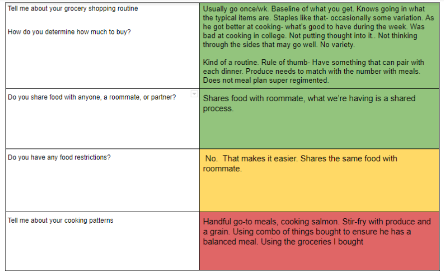
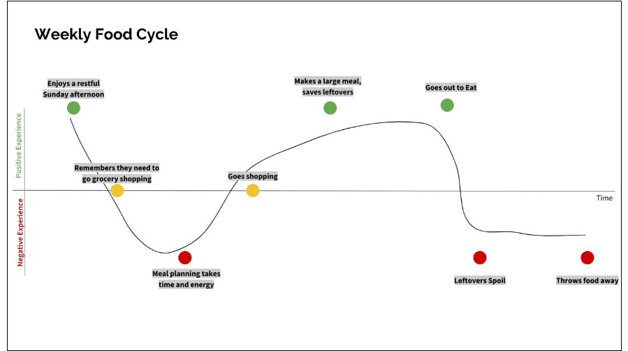
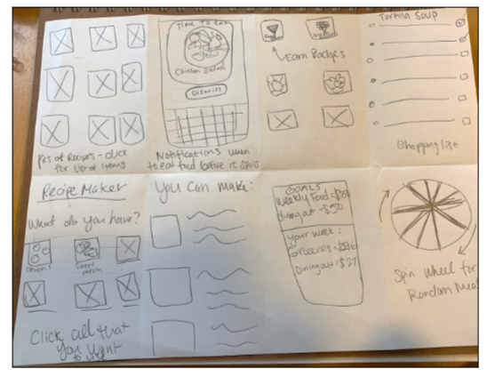

FreshRec
Recipe Creator and Meal Planning App
A high-fidelity screen from the first round of visual design prototyping.
Overview
An academic assignment to design a solution to an everyday problem, food waste. According to the United States Environmental Protection Agency, throwing away food is a common practice among households in the US. Most people don’t realize how much they are throwing away, and about 94% of our food waste ends up in landfills. Not only is this a problem for our planet, our wallets also take a hit. I wanted to research why we throw away food and design a solution that everyone can use to become a food saver!
Audience
The main user for this application is a person who handles the food in their home. From buying groceries, cooking and storing the meals, and ultimately deciding what to save and throw away. When researching this problem I interviewed individuals 25-35 years old who support themselves financially and do their own grocery shopping. Based on this idea of a user, I created a User Persona. This helped me to stay focused on the potential user and direct my design towards them.
Constraints
This project had a semester long timeline of sixteen weeks. Deliverables were due weekly. I was the sole owner of this project and conducted all research and design alone.
User Persona referenced throughout my design process
Design Process
I began this project by researching the food waste problem with some key objectives in mind.
1. Determine why people throw food awayI wanted to know what type of food gets wasted, how much, when, and why. By getting an idea of their process, I could identify ways to help change that process.
2. Determine steps they take to prevent food waste.I wanted to know if any of my potential users already have ways that they prevent throwing food away. By learning how people currently save food I can take those ideas and expand on them to build app features.
I conducted qualitative research with individuals currently managing the food buying and processing in their home. I synthesized the research notes using a “stoplight” technique. If I notice any trends in my research I’d mark that question the color green. Any questions that were not answered similarly were marked in Red. Yellow is for those questions that were so/so.
A snippet of my research analyzing process
After synthesizing my notes. I was able to identify some trends relating to the food waste issue. My interviewees shared that they often throw away vegetables or produce that has spoiled. The key idea that came up in all of my interviews was that reducing food waste starts with meal planning and thinking ahead before making your trip to the grocery store. If you buy items that have a use in a recipe or a plan for a meal, you are more likely to use that item.
Based on these ideas, I started to think of some ways to solve these new problems in my mobile application. I wanted an easy way to keep my users in mind. I created a Journey Map, based on my research, to identify pain points and areas to plan my design after.
Journey map demonstrates the users weekly food cycle.
After creating my journey map I wanted to quickly get some ideas on a page. A brainstorming technique i do often is called Crazy Eights. You spend 8 minutes (one minute per idea) sketching out possible solutions to the problem at hand. The solutions at this point can be farfetched, they can be rough. It’s really just a great way to get your creative energy flowing and some ideas out there.
Crazy Eights
With some ideas in mind, I began to draft some wireframes. I like to start in Balsamiq to build wireframes that are simple and concise. I focus on function first, and after testing plan on incorporating visual design.